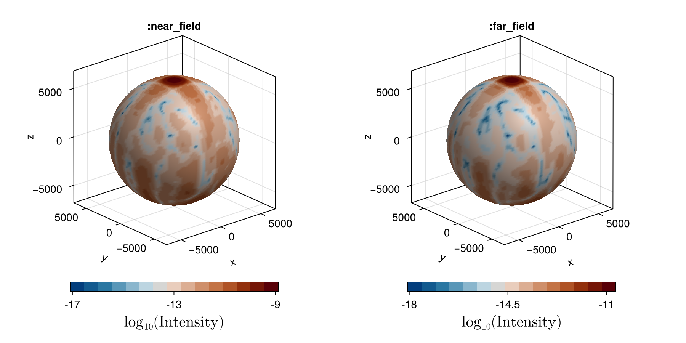

Scattering
The electric field measured at sensor positioned at $\mathbf{R} = R\hat{n}$ results from the sum of all dipoles located at $\mathbf{r}_j$ and their respective states $\beta_j$. The exact formula depends on the model and regime. By default, all scattering function are configured on :near_field regime.
Note: Only the Vectorial Model did not have sufficient tests to be considered reliable on the :far_field (but is considered correct with :near_field)
Computing Electric Field
To calculate electric field, use the provided functions scattered_electric_field and/or laser_and_scattered_electric_field.
Important Note: We have a precise definition for the distance 1/r in the far-field region. While you might normalize intensity values later, making this constant less important, we still use it in our calculations. The formula for determining the far-field distance is: how_far_is_farField(atoms) = 50*size(atoms)^2 - see the Phd Thesis for the reasoning.
Avoid creating your own calculations for scattered fields based on formulas from articles. We use consistent mathematical constants across different simulation regimes and models. The specific formulas we employ are as follows:
Scalar
regime = :near_field
\[E_{sc}(\mathbf{R}, t) = +i\frac{\Gamma}{2}\sum_j \frac{e^{ ik_0|\mathbf{R} - \mathbf{r}_j| }}{k_0|\mathbf{R} - \mathbf{r}_j|}\beta_j(t)\]
regime = :far_field
\[E_{sc}(\mathbf{R}, t) \approx +i\frac{\Gamma}{2} \frac{e^{ ik_0R }}{k_0R}\sum_j exp( -ik_0|\hat{n} \cdot \mathbf{r}_j| )\beta_j(t)\]
Vectorial
regime = :near_field
\[E_{vec}(\mathbf{R}, t) = +i\Gamma\sum_j\sum_{\eta}G_{\mu,\eta}(\mathbf{R}-\mathbf{r}_j)\beta_j^{\eta}(t)\]
regime = :far_field
\[E^\mu_{vec}(\mathbf{R},t) \approx +i\frac{3\Gamma}{4} \frac{e^{ik_0R}}{k_0R}\sum_j\sum_\eta(\delta_{\mu, \eta} - \hat{n}_\mu\hat{n}_\eta^*)exp(-ik_0\hat{\mathbf{n}}\cdot\mathbf{r}_j)\beta_j^\eta(t)\]
This specific equation has not been VALIDATED. If you have experience with this equation, please consider contributing to the package with benchamrks.
MeanField and Pair Correlation
The formulas for electric field in MeanField and PairCorrelation are identifical to those in Scalar model
regime = :near_field|:far_field
\[\mathbf{E}_{mf|pc} = \mathbf{E}_{sc}\]
Computing Intensity
To calculate electric field intensity, use the provided functions scattered_intensity and/or laser_and_scattered_intensity.
Scalar
regime = :near_field|:far_field
\[I_{sc}(\vec{R},t) = |\mathbf{E}_{sc}|^2\]
Vectorial
regime = :near_field|:far_field
\[I_{vec}(\hat{n},t) = |\mathbf{E}_{vec}|^2 = \sum_\mu|E^\mu_{vec}|^2\]
Mean Field
regime = :near_field
\[I_{mf}(\mathbf{R},t) = I_{sc}(\mathbf{R}, t) +\frac{\Gamma^2}{(2k_0)^2} \left [ \sum_{j} \frac{- |\beta_j|^2 + \frac{1+\langle \sigma_j^z \rangle }{2}}{|R-r_j|^2} \right ]\]
regime = :far_field
\[I_{mf}(\mathbf{R},t) = I_{sc}(\mathbf{R}, t) + \frac{\Gamma^2}{(2k_0R)^2}\sum_{j=1}^N \left ( -|\beta_j|^2 + \frac{1 + \langle \sigma_j^z \rangle }{2}\right )\]
PairCorrelation
regime = :near_field
\[I_{\text{PairCorrelation}} = \frac{\Gamma^2}{4 k_0^2} \left [ \sum_{j=1}^{N} \sum_{m=1, m \neq j}^{N} \left( \frac{\langle \sigma_j^+ \sigma_m^- \rangle e^{i \mathbf{k}_0 \cdot (\mathbf{r}_j - \mathbf{r}_m)}}{|\mathbf{r}_j - \mathbf{R}| |\mathbf{r}_m - \mathbf{R}|} \right) + \sum_{j=1}^{N} \left( \frac{1 + \langle \sigma_j^z \rangle }{2 |\mathbf{r}_j - \mathbf{R}|^2} \right)\right ]\]
regime = :far_field
\[I_{\text{PairCorrelation}} = \frac{\Gamma^2}{4 k_0^2 r^2} \left [ \sum_{j=1}^{N} \sum_{m=1, m \neq j}^{N} \langle \sigma_j^+ \sigma_m^- \rangle e^{i \hat{n} \cdot (\mathbf{r}_j - \mathbf{r}_m)} + \sum_{j=1}^{N} \frac{1 + \langle \sigma_j^z \rangle}{2} \right ]\]
Note that in NonLinearOptics, you can choose if you want or not the intensity computed with the Inelastic part of the scattering with inelasticPart=false.
:near_field vs :far_field
Let's measure the scattered intensity over an sphere around the atomic cloud - the figure below IS NOT the cloud.
Create your problem, obtain the atomic states, and then, call scattered_intensity
using CoupledDipoles, Random
# --- setup problem ---
N, ρ = 3000, 25/(2π)^3
Random.seed!(100)
cloud = Atom(CoupledDipoles.Cube(), cube_inputs(N, ρ)...)
w₀, s, Δ = cloud.sizes/2, 1e-5, 0.30769230769
laser = Laser(Gaussian3D(w₀), s, Δ)
problem = LinearOptics(Scalar(), cloud, laser)
βₙ = steady_state(problem)
# --- creating sensors ---
θ = LinRange(0, π, 100)
ϕ = LinRange(0, 2π, 150)
R = 200 * size(cloud)
x = R .* [sin(θ) * sin(ϕ) for θ in θ, ϕ in ϕ]
y = R .* [sin(θ) * cos(ϕ) for θ in θ, ϕ in ϕ]
z = R .* [cos(θ) for θ in θ, ϕ in ϕ]
totalNumberPoints = length(θ) * length(ϕ)
sensors = Array([reshape(x, totalNumberPoints) reshape(y, totalNumberPoints) reshape(z, totalNumberPoints)]')
# getting light intensities
intensities_nf = scattered_intensity(problem, βₙ, sensors; regime = :near_field)
intensities_ff = scattered_intensity(problem, βₙ, sensors; regime = :far_field)
The source code for the figure is:
begin
using CairoMakie, ColorSchemes, GeometryBasics, FileIO
using Makie: get_dim, surface_normals
function getMesh(x, y, z)
positions = vec(
map(CartesianIndices(z)) do i
GeometryBasics.Point{3, Float64}(
get_dim(x, i, 1, size(z)),
get_dim(y, i, 2, size(z)),
z[i],
)
end,
)
faces = decompose(GLTriangleFace, Rect2D(0.0f0, 0.0f0, 1.0f0, 1.0f0), size(z))
normals = surface_normals(x, y, z)
vertices = GeometryBasics.meta(positions; normals = normals)
meshObj = GeometryBasics.Mesh(vertices, faces)
meshObj
end
end
begin
cmap = cgrad(colorschemes[:vik10], 15, categorical = true)
fig = Figure(size = (900, 450))
subgl_left = GridLayout()
subgl_left[1, 1] = [Axis3(fig, aspect = :data, title=":near_field",
xlabel="x", ylabel="y", zlabel="z" ) for i in 1:1]
subgl_right = GridLayout()
subgl_right[1, 1] = [Axis3(fig,aspect = :data, title=":far_field",
xlabel="x", ylabel="y", zlabel="z") for i in 1:1]
fig.layout[1, 1] = subgl_left
fig.layout[1, 2] = subgl_right
pltobj_nf = mesh!(subgl_left[1,1],
getMesh(x, y, z),
color = log10.(intensities_nf),
colormap = cmap,
)
cbar1 = Colorbar(fig, pltobj_nf, label = L"\text{log}_{10}(\text{Intensity})",
vertical = false, flipaxis = false, labelsize=20, width = Relative(3 / 4))
cbar1.ticks = ([-17, -13, -9], ["-17","-13", "-9"])
subgl_left[2,1] = cbar1
pltobj_ff = mesh!(subgl_right[1,1],
getMesh(x, y, z),
color = log10.(intensities_ff),
colormap = cmap,
)
cbar2 = Colorbar(fig, pltobj_ff, label = L"\text{log}_{10}(\text{Intensity})",
vertical = false, flipaxis = false, labelsize=20, width = Relative(3 / 4))
cbar2.ticks = ([-18, -14.5, -11.0], ["-18","-14.5", "-11"])
subgl_right[2,1] = cbar2
fig
end
using FileIO
FileIO.save("intensity_near_far_fields.png", fig)Average Intensity
If you need the azimuthal average intensity, that is
\[I(\theta) = \int_0^{2\pi}|E(\theta, \phi)|^2 d\phi\]
use the function get_intensity_over_an_angle which is optmized to for this problem.
Because the average integral have an exact solution, we have its implementation available, but is not recommeded to use it, since it has $O(N^2)$ in time and memory complexity - and we already verified that our default precision was reliable. In case you need more precision, decrease the tolerance of the integration with the parameter tol.
CoupledDipoles.scattered_electric_field — Functionscattered_electric_field(problem, atomic_states, sensors; regime=:near_field, use_sequencial=false)Returns a Matrix{ComplexF64} with value of the Eletric Laser + Electric Scattered from atoms
- problem:
LinearOpticsorNonLinearOptics - atomic_states: A vector for
Scalar,MeanFieldandPairCorrelation. A matrixVectorialModel - sensors: matrix with measurement points
use_sequencialturn on/off the internal parallelism
Note:
Scalar(and other models) problem returns a Matrix and NOT a Vector, to maintain consistency withVectorialproblem that necessary returns a Matrix, where each row has the [Ex, Ey, Ez] components of the field.Also, even for single sensor, returns a Matrix of one element.
Example
using CoupledDipoles, Random
Random.seed!(111)
N = 5
kR, kh = 1.0, 1.0
atoms = Atom(Cylinder(), N, kR, kh)
s, Δ = 1e-5, 1.0
laser = Laser(PlaneWave3D(), s, Δ; polarization=[1,0,0])
problem_scalar = LinearOptics(Scalar(), atoms, laser)
problem_vectorial = LinearOptics(Vectorial(), atoms, laser)
atomic_states_scalar = steady_state(problem_scalar)
atomic_states_vectorial = steady_state(problem_vectorial)
## 1 sensor
Random.seed!(222)
nSensors = 1
sensor = Matrix(rand(3, nSensors)) # '3' == sensor lives in a 3D space
scattered_electric_field(problem_scalar, atomic_states_scalar, sensor)
scattered_electric_field(problem_vectorial, atomic_states_vectorial, sensor)
## 10 sensors
Random.seed!(333)
nSensors = 10
sensor = rand(3, nSensors) # '3' == sensor lives in a 3D space
scattered_electric_field(problem_scalar, atomic_states_scalar, sensor)
scattered_electric_field(problem_vectorial, atomic_states_vectorial, sensor)CoupledDipoles.laser_and_scattered_intensity — Functionlaser_and_scattered_intensity(problem, atomic_states, sensor_positions; regime=:near_field)Returns a Vector{Float64} with value of the |Electric Laser + Electric Scattered|^2 from atoms
- problem:
LinearOpticsorNonLinearOptics - atomic_states: β for
Scalar/VectorialModel, or [β,z] forMean FieldModel - sensors: matrix with measurement points
CoupledDipoles.scattered_intensity — Functionscattered_intensity(problem, atomic_states, sensor_positions; regime=:near_field, use_sequencial=false)Returns a Vector{Float64} with value of the |Electric Scattered|^2 from atoms
- problem:
LinearOpticsorNonLinearOptics - atomic_states: β for
Scalar/VectorialModel, or [β,z] forMean FieldModel - sensor_positions: matrix with measurement points
use_sequencialturn on/off the internal parallelism
Example
using CoupledDipoles, Random
Random.seed!(111)
N = 5
kR, kh = 1.0, 1.0
atoms = Atom(Cylinder(), N, kR, kh)
s, Δ = 1e-5, 1.0
laser = Laser(PlaneWave3D(), s, Δ; polarization=[1,0,0])
problem_scalar = LinearOptics(Scalar(), atoms, laser)
problem_vectorial = LinearOptics(Vectorial(), atoms, laser)
atomic_states_scalar = steady_state(problem_scalar)
atomic_states_vectorial = steady_state(problem_vectorial)
## 1 sensor
Random.seed!(222)
nSensors = 1
sensor = Matrix(rand(3, nSensors)) # '3' == sensor in position in 3D space
scattered_intensity(problem_scalar, atomic_states_scalar, sensor)
scattered_intensity(problem_vectorial, atomic_states_vectorial, sensor)
## 10 sensors
Random.seed!(333)
nSensors = 10
sensor = rand(3, nSensors) # '3' == sensor in position in 3D space
scattered_intensity(problem_scalar, atomic_states_scalar, sensor)
scattered_intensity(problem_vectorial, atomic_states_vectorial, sensor)scattered_intensity(problem::NonLinearOptics{T}, atomic_states, sensors; regime=:near_field, inelasticPart=true, use_sequencial=false)If you are working in NonLinearOptics and your intensity values become negative, probably the issue lies on the values of the inelastic component that become non-physical, and is handy to have a function to swtich on-off this particular variable to investigate the problem.
For special case of NonLinearOptics, you have the option to neglect the inelastic component with inelasticPart=false.
CoupledDipoles.get_intensity_over_an_angle — Functionget_intensity_over_an_angle(problem::LinearOptics{Scalar}, atoms_states::Vector{ComplexF64}, θ::Number; tol=exp10(-7.4), exact_solution=false)Used for the single angle and single single state (most probably user case).
Example:
using CoupledDipoles, Random
Random.seed!(111)
N = 5
kR, kh = 1.0, 1.0
atoms = Atom(Cylinder(), N, kR, kh)
s, Δ = 1e-5, 1.0
laser = Laser(PlaneWave3D(), s, Δ; polarization=[1,0,0])
problem_scalar = LinearOptics(Scalar(), atoms, laser)
atomic_states_scalar = steady_state(problem_scalar)
θ = deg2rad(48)
get_intensity_over_an_angle(problem_scalar, atomic_states_scalar, θ)get_intensity_over_an_angle(problem::LinearOptics{Scalar}, atoms_states::Vector{Vector{ComplexF64}}, θ::Number; tol=exp10(-7.4), exact_solution=false)Used for the single angle and different states (for example, the output of time_evolution).
Example:
using CoupledDipoles, Random
Random.seed!(111)
N = 5
kR, kh = 1.0, 1.0
atoms = Atom(Cylinder(), N, kR, kh)
s, Δ = 1e-5, 1.0
laser = Laser(PlaneWave3D(), s, Δ; polarization=[1,0,0])
problem_scalar = LinearOptics(Scalar(), atoms, laser)
u0 = default_initial_condition(problem_scalar)
tspan = (0.0, 10.0)
solutions = time_evolution(problem_scalar, u0, tspan)
states = solutions.u
θ = deg2rad(48)
get_intensity_over_an_angle(problem_scalar, states, θ)